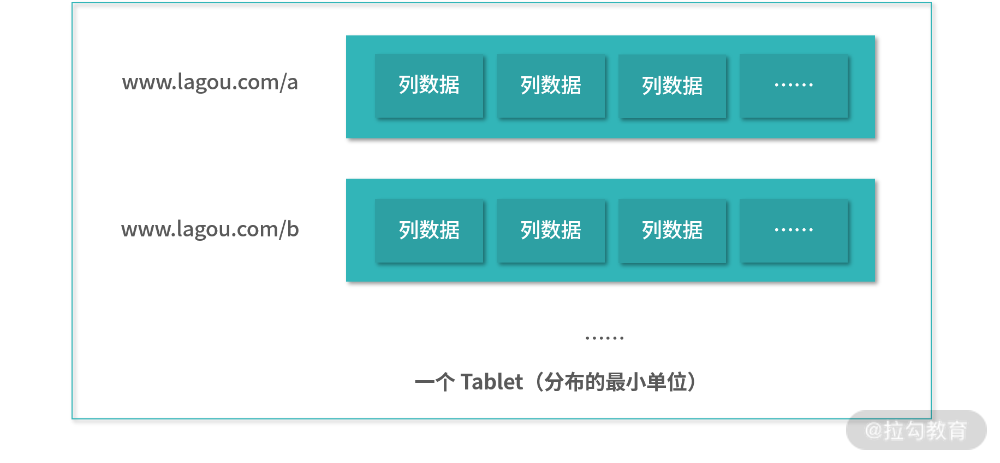
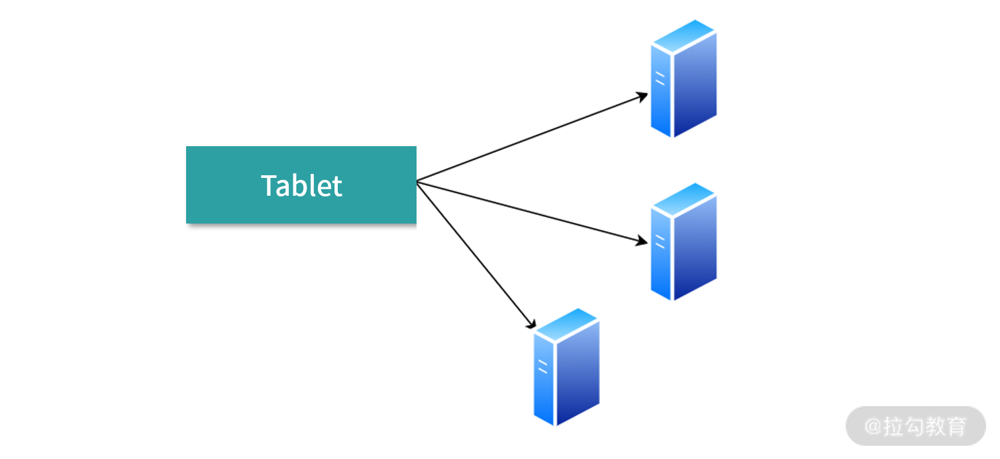
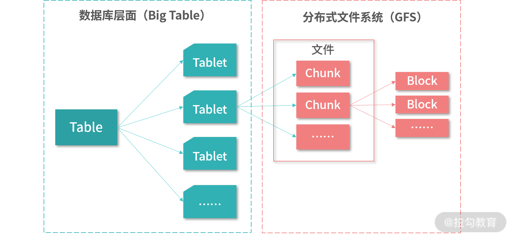
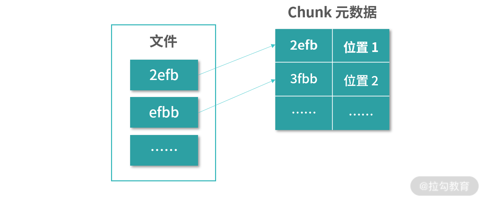
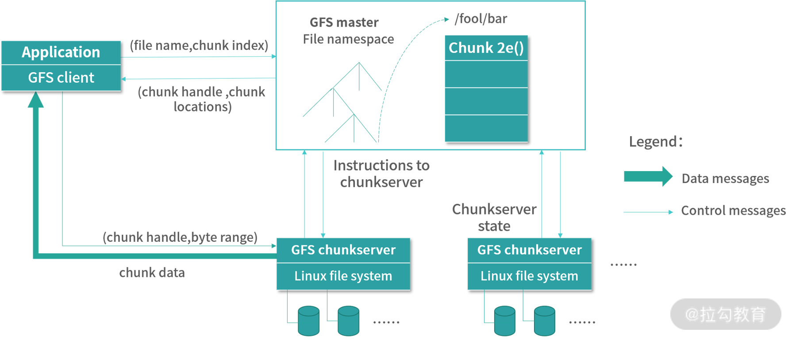
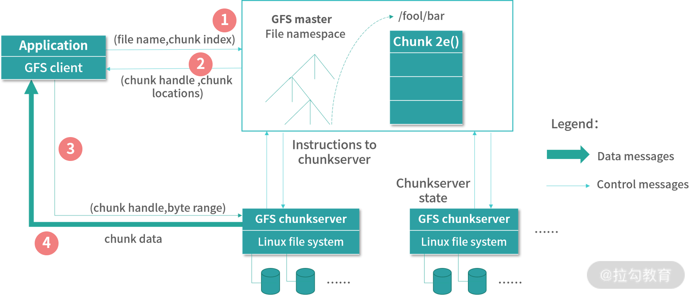
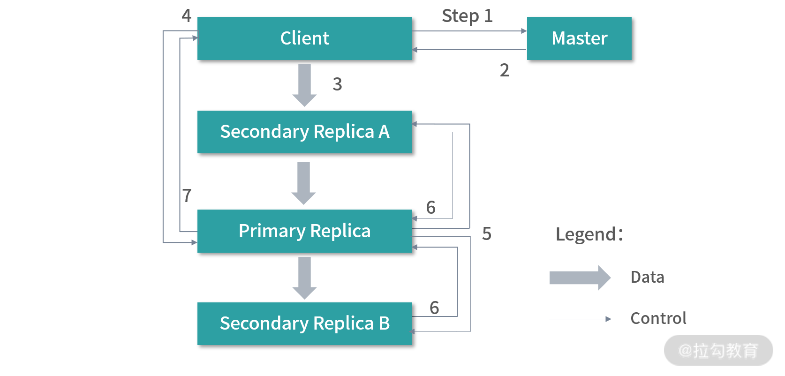

- 00 开篇词 为什么大厂面试必考操作系统？.md.html
- 00 课前必读 构建知识体系，可以这样做！.md.html
- 01 计算机是什么：“如何把程序写好”这个问题是可计算的吗？.md.html
- 02 程序的执行：相比 32 位，64 位的优势是什么？（上）.md.html
- 03 程序的执行：相比 32 位，64 位的优势是什么？（下）.md.html
- 04 构造复杂的程序：将一个递归函数转成非递归函数的通用方法.md.html
- 05 存储器分级：L1 Cache 比内存和 SSD 快多少倍？.md.html
- 05 (1) 加餐 练习题详解（一）.md.html
- 06 目录结构和文件管理指令：rm -rf 指令的作用是？.md.html
- 07 进程、重定向和管道指令：xargs 指令的作用是？.md.html
- 08 用户和权限管理指令： 请简述 Linux 权限划分的原则？.md.html
- 09 Linux 中的网络指令：如何查看一个域名有哪些 NS 记录？.md.html
- 10 软件的安装： 编译安装和包管理器安装有什么优势和劣势？.md.html
- 11 高级技巧之日志分析：利用 Linux 指令分析 Web 日志.md.html
- 12 高级技巧之集群部署：利用 Linux 指令同时在多台机器部署程序.md.html
- 12 (1)加餐 练习题详解（二）.md.html
- 13 操作系统内核：Linux 内核和 Windows 内核有什么区别？.md.html
- 14 用户态和内核态：用户态线程和内核态线程有什么区别？.md.html
- 15 中断和中断向量：Javajs 等语言为什么可以捕获到键盘输入？.md.html
- 16 WinMacUnixLinux 的区别和联系：为什么 Debian 漏洞排名第一还这么多人用？.md.html
- 16 (1)加餐 练习题详解（三）.md.html
- 17 进程和线程：进程的开销比线程大在了哪里？.md.html
- 18 锁、信号量和分布式锁：如何控制同一时间只有 2 个线程运行？.md.html
- 19 乐观锁、区块链：除了上锁还有哪些并发控制方法？.md.html
- 20 线程的调度：线程调度都有哪些方法？.md.html
- 21 哲学家就餐问题：什么情况下会触发饥饿和死锁？.md.html
- 22 进程间通信： 进程间通信都有哪些方法？.md.html
- 23 分析服务的特性：我的服务应该开多少个进程、多少个线程？.md.html
- 23 (1)加餐 练习题详解（四）.md.html
- 24 虚拟内存 ：一个程序最多能使用多少内存？.md.html
- 25 内存管理单元： 什么情况下使用大内存分页？.md.html
- 26 缓存置换算法： LRU 用什么数据结构实现更合理？.md.html
- 27 内存回收上篇：如何解决内存的循环引用问题？.md.html
- 28 内存回收下篇：三色标记-清除算法是怎么回事？.md.html
- 28 (1)加餐 练习题详解（五）.md.html
- 29 Linux 下的各个目录有什么作用？.md.html
- 30 文件系统的底层实现：FAT、NTFS 和 Ext3 有什么区别？.md.html
- 31 数据库文件系统实例：MySQL 中 B 树和 B+ 树有什么区别？.md.html
- 32 HDFS 介绍：分布式文件系统是怎么回事？.md.html
- 32 (1)加餐 练习题详解（六）.md.html
- 33 互联网协议群（TCPIP）：多路复用是怎么回事？.md.html
- 34 UDP 协议：UDP 和 TCP 相比快在哪里？.md.html
- 35 Linux 的 IO 模式：selectpollepoll 有什么区别？.md.html
- 36 公私钥体系和网络安全：什么是中间人攻击？.md.html
- 36 (1)加餐 练习题详解（七）.md.html
- 37 虚拟化技术介绍：VMware 和 Docker 的区别？.md.html
- 38 容器编排技术：如何利用 K8s 和 Docker Swarm 管理微服务？.md.html
- 39 Linux 架构优秀在哪里.md.html
- 40 商业操作系统：电商操作系统是不是一个噱头？.md.html
- 40 (1)加餐 练习题详解（八）.md.html
- 41 结束语 论程序员的发展——信仰、选择和博弈.md.html
- 捐赠
32 HDFS 介绍：分布式文件系统是怎么回事？
前面我们学习了单机文件系统、数据库索引的设计，这一讲我们讨论大数据环境下的数据管理——分布式文件系统和分布式数据库。分布式文件系统通过计算机网络连接大量物理节点，将不同机器、不同磁盘、不同逻辑分区的数据组织在一起，提供海量的数据存储（一般是 Petabytes 级别，1PB = 1024TB）。分布式数据库则在分布式文件系统基础上，提供应对具体场景的海量数据解决方案。
说起大数据，就不得不提历史上在存储领域影响深远的两篇 Paper。
- Google File System
- BigTable：A Distributed Storage System for Structured Data
Google File System 是一个分布式文件系统，构成了今天大数据生态的底层存储，也是我们本讲主角 HDFS 的原型。HDFS（Hadoop Distributed File System）是 Google File System 的一个重要实现。
后者 BigTable 是一个分布式数据库。BigTable 本身是 Google 内部的项目，建立在 Google File System 之上，为 Google 的搜索引擎提供数据支撑。它是 2005 年公布的第一个版本，而且通过 Paper 公布了实现，在那个大数据还处于萌芽阶段的时代，BigTable 成为了启明星，今天我们常用的 HBase 还沿用着 BigTable 的设计。
因为两个重量级的 Paper 都是 Google 的产物，所以这一讲，我会结合搜索引擎的设计，带你走进分布式存储和数据库的世界。
存储所有的网页
作为搜索引擎最核心的一个能力，就是要存储所有的网页。目前世界上有 20 多亿个网站，每个网站还有大量的页面。搜索引擎不单单要存下这些页面，而且搜索引擎还需要存储这些网页的历史版本。
这里请你思考下，网站所有页面加起来有多大？举个例子，豆瓣所有页面加起来会有多大？如果把所有的变更都算上，比如一张页面经过 200 次迭代，就存 200 份，那么需要多少空间？Google 要把这些数据都存储下来，肯定是 PB 级别的数据。而且这个庞大的数据还需要提供给 Google 内部的分布式计算引擎等去计算，为网站打分、为用户生成索引，如果没有强大的存储能力是做不到的。
模型的选择
我们先来思考应该用何种模型存下这个巨大的网页表。
网页的历史版本，可以用 URL+ 时间戳进行描述。但是为了检索方便，网页不仅有内容，还有语言、外链等。在存储端可以先不考虑提供复杂的索引，比如说提供全文搜索。但是我们至少应该提供合理的数据读写方式。
网页除了内容，还有外链，外链就是链接到网页的外部网站。链接到一个网站的外链越多，那就说明这个网站在互联网中扮演的角色越重要。Google 创立之初就在基于外链的质量和数量为网站打分。外链可能是文字链接、图片链接等，因此外链也可以有版本，比如外链文本调整了，图片换了。除了外链还有标题、Logo，也需要存储。其实要存储的内容有很多，我不一一指出了。
我们先看看行存储，可不可以满足需求。比如每个网页（ URL） 的数据是一行。 看似这个方案可行，可惜列不是固定。比如外链可能有很多个，如下表：
列不固定，不仅仅是行的大小不好确定，而是表格画不出来。何况每一列内容还可能有很多版本，不同版本是搜索引擎的爬虫在不同时间收录的内容，再加上内容本身也很大，有可能一个磁盘 Block 都存不下。看来行存储困难重重。
那么列存储行不行呢？ 当然不行，我们都不确定到底有多少列？ 有的网站有几千个外链，有的一个都没有，外链到底用多少列呢？
所以上表只可以作为我们存储设计的一个逻辑概念——这种逻辑概念在设计系统的时候，还有一个名词，叫作领域语言。领域语言是我们的思考方式，从搜索引擎的职责上讲，数据需要按照上面的结构聚合。况且根据 URL 拿数据，这是必须提供的能力。但是底层如何持久化，还需要进一步思考。
因为列是不确定的，这种情况下只能考虑用 Key-Value 结构，也就是 Map 存储。Map 是一种抽象的数据结构，本质是 Key-Value 数据的集合。 作为搜索引擎的支撑，Key 可以考虑设计为
列名（Column）可以考虑分成两段，用:分隔开。列名包括列家族（Family) 、列标识（Qualifier）。这样设计是因为有时候多个列描述的是相似的数据，比如说外链（Anchor），就是一个列家族。然后百度、搜狐是外链家族的具体的标识（Qualifier）。比如来自百度页面 a 外链的列名是anchor:baidu.com/a。分成家族还有一个好处就是权限控制，比如不同部门的内部人员可以访问不同列家族的数据。当然有的列家族可能只有一个列，比如网页语言；有的列家族可能有很多列，比如外链。
接下来，我们思考：这个巨大的 Map（Key-Value）的集合应该用什么数据结构呢？——数组？链表？树？哈希表？
小提示：Map 只是 Key-Value 的集合。并没有约定具体如何实现，比如 HashMap 就是用哈希表实现 Map，ArrayMap 就是用数组实现 Map。LinkedMap 就是用链表实现 Map。LinkedJumpMap 就是用跳表实现 Map……
考虑到一行的数据并不会太大，我们可以用 URL 作为行的索引。当用户想用 Key 查找 Value 时，先使用 Key 中 URL 帮用户找到完整的行。这里可以考虑使用上一讲学习的 B+ 树去存储所有的 URL，建立一个 URL 到行号的索引。你看看，知识总是被重复利用，再次证明了人类的本质是复读机，其实就是学好基础很重要。通过 B+ 树，这样即便真的有海量的数据，也可以在少数几次、几十次查询内完成找到 URL 对应的数据。况且，我们还可以设计缓存。
B+ 树需要一种顺序，比较好的做法是 URL 以按照字典序排列。这是因为，相同域名的网页资源同时被用到的概率更高，应该安排从物理上更近，尽量把相同域名的数据放到相邻的存储块中（节省磁盘操作）。
那么行内的数据应该如何存储呢？可以考虑分列存储。那么行内用什么数据结构呢？如果列非常多，也可以考虑继续用 B+ 树。还有一种设计思路，是先把大表按照行拆分，比如若干行形成一个小片称作 Tablet，然后 Tablet 内部再使用列存储，这个设计我们会在后面一点讨论。
查询和写入
当客户端查询的时候，请求参数中会包含
客户端写入时，也是按照行→列的顺序，先找到列，再在这一列最后面追加数据。
对于修改、删除操作可以考虑不支持，因为所有的变更已经记录下来了。
分片（Tablet）的抽象
上面我们提到了可以把若干行组合在一起存储的设计。这个设计比较适合数据在集群中分布。假设存储网页的表有几十个 PB，那么先水平分表，就是通过 行（URL） 分表。URL 按照字典排序，相邻的 URL 数据从物理上也会相近。水平分表的结果，字典序相近的行（URL）数据会形成分片（Tablet），Tablet 这个单词类似药片的含义。

如上图所示：每个分片中含有一部分的行，视情况而定。分片（Tablet），可以作为数据分布的最小单位。分片内部可以考虑图上的行存储，也可以考虑内部是一个 B+ 树组织的列存储。
为了实现分布式存储，每个分片可以对应一个分布式文件系统中的文件。假设这个分布式文件系统接入了 Linux 的虚拟文件系统，使用和操作会同 Linux 本地文件并无二致。其实不一定会这样实现，这只是一个可行的方案。
为了存储安全，一个分片最少应该有 2 个副本，也就是 3 份数据。3 份数据在其中一份数据不一致后，可以对比其他两份的结果修正数据。这 3 份数据，我们不考虑跨数据中心。因为跨地域成本太高，吞吐量不好保证，假设它们还在同一地域的机房内，只不过在不同的机器、磁盘上。

块（Chunk）的抽象
比分片更小的单位是块（Chunk），这个单词和磁盘的块（Block）区分开。Chunk 是一个比 Block 更大的单位。Google File System 把数据分成了一个个 Chunk，然后每个 Chunk 会对应具体的磁盘块（Block）。
如下图，Table 是最顶层的结构，它里面含有许多分片（Tablets）。从数据库层面来看，每个分片是一个文件。数据库引擎维护到这个层面即可，至于这个文件如何在分布式系统中工作，就交给底层的文件系统——比如 Google File System 或者 Hadoop Distributed File System。

分布式文件系统通常会在磁盘的 Block 上再抽象一层 Chunk。一个 Chunk 通常比 Block 大很多，比如 Google File System 是 64KB，而通常磁盘的 Block 大小是 4K；HDFS 则是 128MB。这样的设计是为了减少 I/O 操作的频率，分块太小 I/O 频率就会上升，分块大 I/O 频率就减小。 比如一个 Google 的爬虫积攒了足够多的数据再提交到 GFS 中，就比爬虫频繁提交节省网络资源。
分布式文件的管理
接下来，我们来讨论一个完整的分布式系统设计。和单机文件系统一样，一个文件必须知道自己的数据（Chunk）存放在哪里。下图展示了一种最简单的设计，文件中包含了许多 Chunk 的 ID，然后每个 ChunkID 可以从 Chunk 的元数据中找到 Chunk 对应的位置。

如果 Chunk 比较大，比如说 HDFS 中 Chunk 有 128MB，那么 1PB 的数据需要 8,388,608 个条目。如果每个条目用 64bit 描述，也就是 8 个字节，只需要 64M 就可以描述清楚。考虑到一个 Chunk 必然会有冗余存储，也就是多个位置，实际会比 64M 多几倍，但也不会非常大了。
因此像 HDFS 和 GFS 等，为了简化设计会把所有文件目录结构信息，加上 Chunk 的信息，保存在一个单点上，通常称为 Master 节点。

下图中，客户端想要读取/foo/bar中某个 Chunk 中某段内容（Byterange）的数据，会分成 4 个步骤：
- 客户端向 Master 发送请求，将想访问的文B件名、Chunk 的序号（可以通过 Chunk 大小和内容位置计算）；
- Master 响应请求，返回 Chunk 的地址和 Chunk 的句柄（ID）；
- 客户端向 Chunk 所在的地址（一台 ChunkServer）发送请求，并将句柄（ID）和内容范围（Byterange）作为参数；
- ChunkServer 将数据返回给客户端。

在上面这个模型中，有 3 个实体。
- 客户端（Client）或者应用（Application），它们是数据的实际使用方，比如说 BigTable 数据库是 GFS 的 Client。
- Master 节点，它存储了所有的文件信息、Chunk 信息，权限信息等。
- ChunkServer 节点，它存储了实际的 Chunk 数据。
Master 只有一台，ChunkServer 可以有很多台。上图中的 namespace 其实就是文件全名（含路径）的集合。Chunk 的 namespace 存储的是含文件全名 + ChunkLocation + ChunkID 的组合。文件的命名空间、Chunk 的命名空间，再加上文件和 Chunk 的对应关系，因为需要频繁使用，可以把它们全部都放到 Master 节点的内存中，并且利用 B 树等在内存中创建索引结构。ChunkServer 会和 Master 保持频繁的联系，将自己的变更告知 Master。这样就构成了一个完整的过程。
读和写
读取文件的过程需要两次往返（Round Trip），第一次是客户端和 Master 节点，第二次是客户端和某个 ChunkServer。
写入某个 Chunk 的时候，因为所有存储了这个 Chunk 的服务器都需要更新，所以需要将数据推送给所有的 ChunkServer。这里 GFS 设计中使用了一个非常巧妙的方案，先由客户端将数据推送给所有 ChunkServer 并缓存，而不马上更新。直到所有 ChunkServer 都收到数据后，再集中更新。这样的做法减少了数据不一致的时间。
下图是具体的更新步骤：
- 客户端要和服务器签订租约，得到一个租期（Lease）。其实就是 Chunk 和 Chunk 所有复制品的修改权限。如果一个客户端拿到租期，在租期内，其他客户端能不能修改这个 Chunk。
- Master 告诉客户端该 Chunk 所有的节点位置。包括 1 台主节点（Primary）和普通节点（Secondary）。当然主节点和普通节点，都是 ChunkServer。主 ChunkServer 的作用是协助更新所有从 ChunkServer 的数据。
- 这一步是设计得最巧妙的地方。客户端接下来将要写入的数据同时推送给所有关联的 ChunkServer。这些 ChunkServer 不会更新数据，而是把数据先缓存起来。
- 图中的所有 ChunkServer 都收到了数据，并且给客户端回复后，客户端向主 ChunkServer 请求写入。
- 主 ChunkServer 通知其他节点写入数据。因为数据已经推送过来了，所以这一步很快完成。
- 写入完数据的节点，所有节点给主 ChunkServer 回复。
- 主 ChunkServer 通知客户端成功。

以上，就是 GFS 的写入过程。这里有个规律，实现强一致性（所有时刻、所有客户端读取到的数据是一致的）就需要停下所有节点的工作牺牲可用性；或者牺牲分区容错性，减少节点。GFS 和 HDFS 的设计，牺牲的是一致性本身，允许数据在一定时间范围内是不一致的，从而提高吞吐量。
容灾
在 HDFS 设计中，Master 节点也被称为 NameNode，用于存储命名空间数据。ChunkServer 也被称为 DataNode，用来存储文件数据。在 HDFS 的设计中，还有一个特殊的节点叫作辅助节点（Secondary Node）。辅助节点本身更像一个客户端，它不断和 NameNode 交流，并把 NameNode 最近的变更写成日志，存放到 DataNode 中。类似日志文件系统，每过一段时间，在 HDFS 中这些日志会形成一个还原点文件，这个机制和上一讲我们提到的日志文件系统类似。如果 Master 节点发生了故障，就可以通过这些还原点进行还原。
其他
在分布式文件系统和分布式数据库的设计中，还有很多有趣的知识，比如缓存的设计、空间的回收。如果你感兴趣，你可以进一步阅读我开篇给出的两篇论文。
- Google File System
- BigTable：A Distributed Storage System for Structured Data
总结
现在，我们已经可以把所有的场景都串联起来。Google 需要的是一个分布式数据库，存储的数据是包括内容、外链、Logo、标题等在内的网页的全部版本和描述信息。为了描述这些信息，一台机器磁盘不够大，吞吐量也不够大。因此 Google 需要将数据分布存储，将这个大表（BigTable）拆分成很多小片（Tablet）。当然，这并不是直接面向用户的架构。给几十亿用户提供高效查询，还需要分布式计算，计算出给用户使用的内容索引。
Google 团队发现将数据分布出去是一个通用需求。不仅仅是 BigTable 数据库需要，很多其他数据库也可以在这个基础上构造。按照软件设计的原则，每个工具应该尽可能的专注和简单， Google 的架构师意识到需要一个底层的文件系统，就是 Google File System。这样，BigTable 使用 Tablet 的时候，只需要当成文件在使用，具体的分布式读写，就交给了 GFS。
后来，Hadoop 根据 GFS 设计了 Hadoop 分布式文件系统，用于处理大数据，仍然延续了整个 GFS 的设计。
以上，是一个完整的，分布式数据库、分布式存储技术的一个入门级探讨。
那么通过这节课的学习，你现在可以尝试来回答本节关联的面试题目：分布式文件系统是怎么回事？
【解析】分布式文件系统通过网络将不同的机器、磁盘、逻辑分区等存储资源利用起来，提供跨平台、跨机器的文件管理。通过这种方式，我们可以把很多相对廉价的服务器组合起来形成巨大的存储力量。
© 2019 - 2023 Liangliang Lee. Powered by gin and hexo-theme-book.